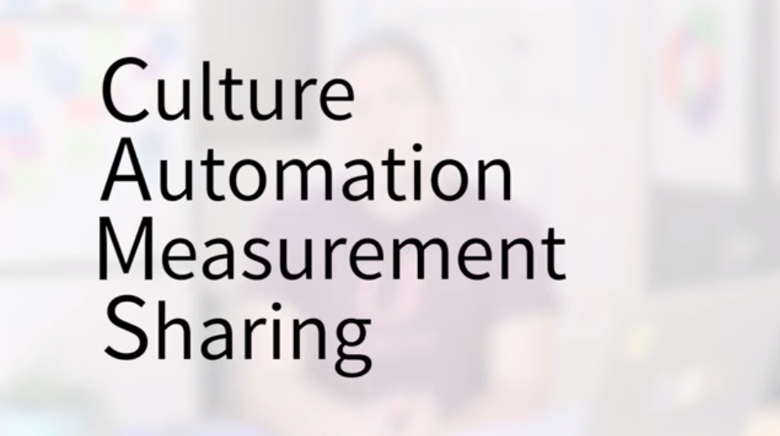
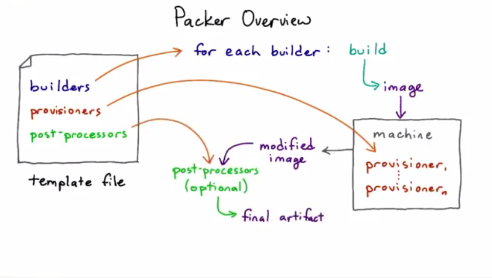

Devops Basics


Additional resources
Notable Books
- The Phoenix Project (by Gene Kim, Kevin Behr, George Spafford) - A Novel About IT, DevOps, and Helping Your Business Win
- Continuous Delivery: Reliable Software Releases through Build, Test, and Deployment Automation (by Jez Humble, David Farley) - The principles and technical practices that enable rapid, incremental delivery of high quality, valuable new functionality to users.
- Lean Enterprise: How High Performance Organizations Innovate at Scale (by Jez Humble, Joanne Molesky, Barry O'Reilly) - Lean and Agile principles and patterns to help you move fast at scale - and demonstrates why and how to apply these methodologies throughout your organization, rather than with just one department or team.
- Building a DevOps Culture (by Mandi Walls) - Free Kindle book - DevOps is as much about culture as it is about tools
Notable Presentations
- Short history of DevOps - video by Damon Edwards
- Chef Style DevOps Kungfu - Adam Jacob Keynote - ChefConf 2015
- Jez Humble Keynote - ChefConf 2015
- Leading the Horses to Drink - Support and Initiate a DevOps transformation by Damon Edwards.
Additional DevOps related blogs and sites
- What DevOps means to me - an explanation of the components that make up CAMS (Culture, Automation, Measurement, Sharing), as well additional thoughts on what DevOps is and is not - by John Willis
- dev2ops - Delivering Change in a DevOps and Cloud World
- the agile admin - blog on topics of DevOps, agile operations, cloud computing, infrastructure automation, Web security (especially AppSec), transparency, open source, monitoring, Web performance optimization, and more.
- The DevOps checklist - This checklist is comprised of 48 items you can use to gauge the maturity of your software delivery competency, and form a baseline to measure your future improvements.
- DevOps – A Crash Course by Matt Stratton. A lot of links to good resources on DevOps topics.
Additional Resources by Nutanix
- The Nutanix Bible - Brief History of datacenters, virtualisation, webscale architecture and an explanation of Nutanix hyperconverged architecture.
- Hyperconverged Infrastructure Guide
- Nutanix Education portal
- Nutanix Education YouTube channel
- Nutanix NEXT community site